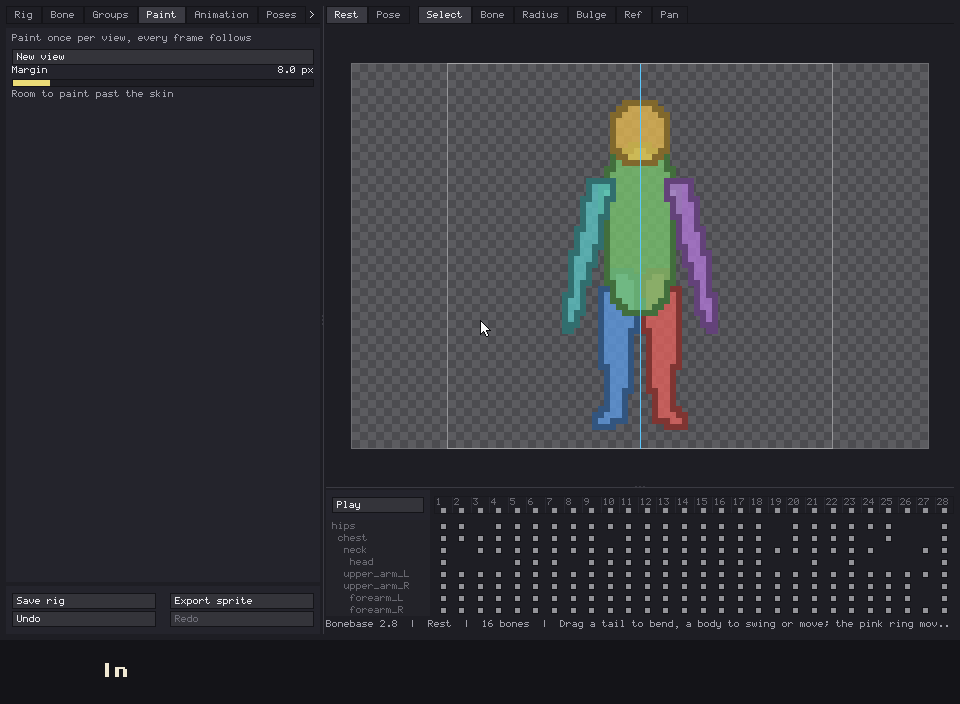
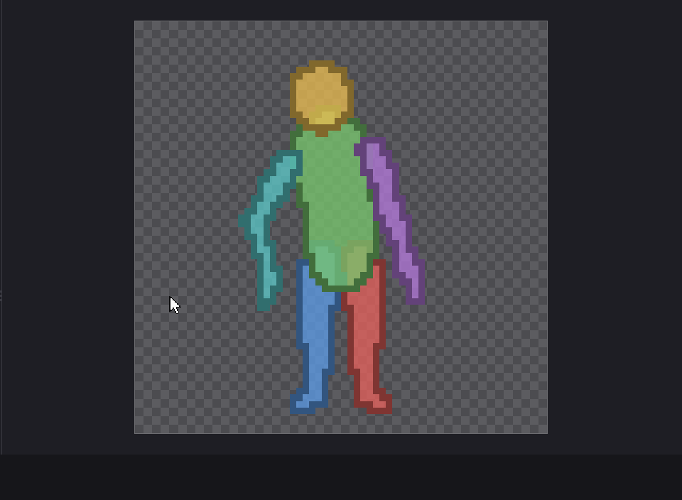
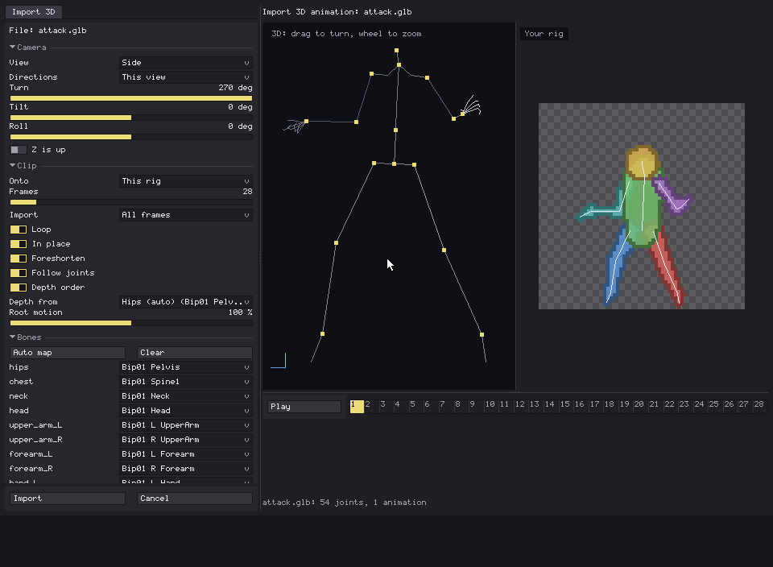
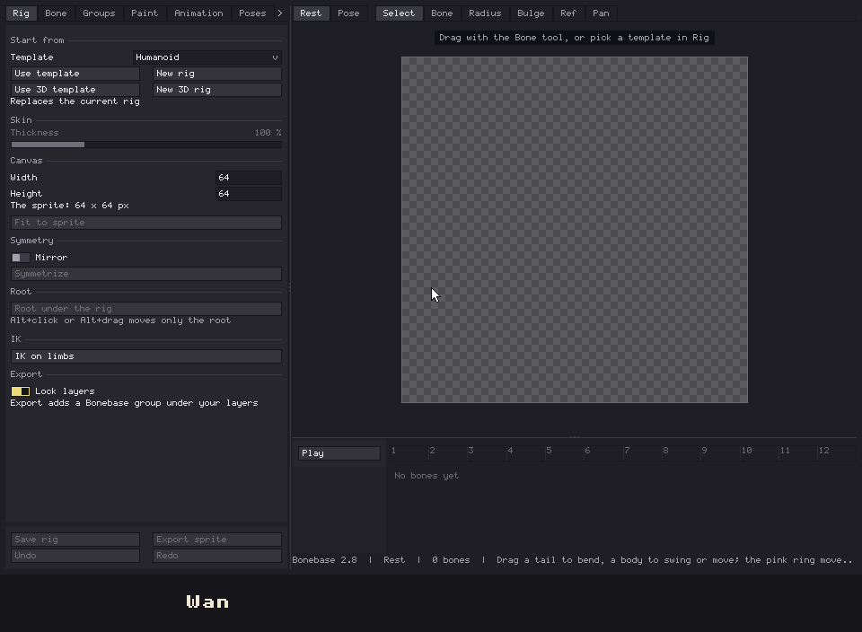
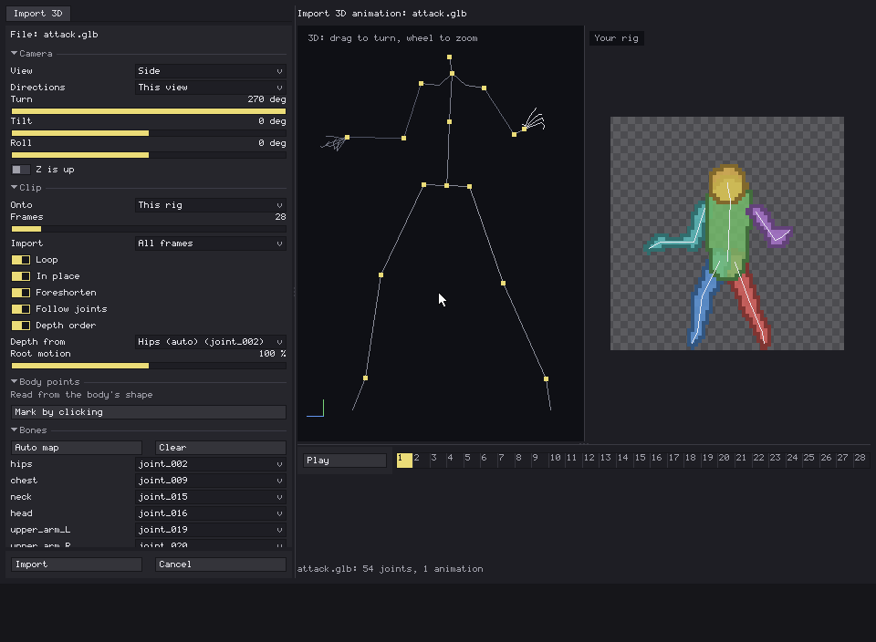
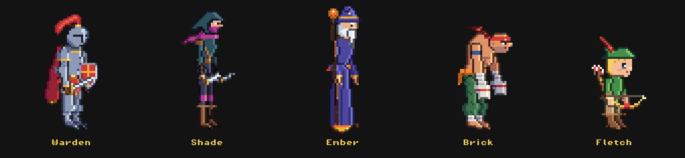

Bonebase 2.9 is out! Last devlog ended with "drawings on bones" in the roadmap. That turned into painting the whole character, which turned into views, which turned into 3D rigs, which is how I learned I can't keep a roadmap short either. Here's everything since 2.2.
Short version for anyone new: you build a skeleton, give it a rough body, animate it with live IK, and export it to Aseprite as layers. Until now you drew over that rough body on every frame. Now you can paint it once.
Paint sheets

The idea comes from Astortion's devlog: every pixel of the animation points to a spot on one texture, so editing that texture changes every frame at once. There the map is painted by hand. Here the rig already knows which bone owns each pixel, so you get it for free.
- New view in the Paint tab opens a sheet in Aseprite with each group laid out flat. Paint it with your usual tools and the animation updates while you draw.
- Painting outside the skin adds to it and erasing cuts it, so a hat, a sword or a cape is just more paint.
- Stretching a bone stretches the body, not the sword in its hand.
- While you paint, the big window steps aside for a small preview, so you can see Aseprite.
- Outline can be turned off for painted groups, for people who draw their own lines.
Pixel lock and On twos

Rotating pixel art redraws every pixel of the bone and everything hanging off it, so a chest that turns two degrees makes the head shimmer. I tried eight ways of fixing it and kept the one that won on my tests: Pixel lock turns each bone in steps that move its tip a few pixels and only takes the next step when it's well past the middle. On my flicker test it's about a quarter less shimmer, and the rest pose comes out exactly as you painted it.
On twos is the classic: the clip holds each pose for two frames. It's set per clip.
Views and 8 directions

The most upvoted comment on the Reddit post asked for 8 directions, so here they are. A rig can have as many painted views as you want, with your own names, and each clip picks which view it shows.
- Import 3D has Directions: this view, front and side, 4 or 8. You get one clip per direction, each pointing at the view with its name.
- The mirrored sides are the other side's clip flipped on export, like you'd do by hand, so painting one side covers both.
- Mirror on export works on any clip, not only imported ones.
3D rigs

This one is for people who want every angle without painting every angle. Pick Use 3D template and the bones get depth. You turn the camera, the rig turns with it, and the export can go out in 4 or 8 real directions.
- Import 3D on a 3D rig keeps the motion in 3D instead of flattening it to one camera.
- Painting works as a strip wrapped around each bone: the middle is its front, the edges its back. An arm in front of the chest covers it pixel by pixel.
- Optional shading with three tones, light from the top left.
- Honest limits: no IK in 3D yet, and Pixel lock doesn't apply to wrapped paint.
Skeletons with odd names

Import 3D used to map bones by name, and a file with joints called joint_042 got you a list of dropdowns and a lot of guessing. Now when the names say nothing, Bonebase reads the skeleton's rest pose: where the feet touch the ground, where the legs meet, which way the toes point, how far the arms spread. I tested it by wiping the names off real files and comparing: on a Rigify metarig it lands on the same 16 bones as the names did.
If it still guesses wrong, Mark by clicking asks for six points (hips, head, both hands, both feet) and you click them on the 3D view. The marking view looks from behind, so the character's left hand is on your left. Everything between the points is worked out for you.
Example characters

The library is no longer empty. Warden, Shade, Ember, Brick and Fletch come with the extension, painted and ready to open in any sprite. They're there to poke at: open one, look at how the sheet is laid out, break it.
I tried giving them a full set of clips, and most of them didn't look right, so they ship standing still. Except Brick, who keeps his run, because nobody could stop him.
A guide for everything
There's now a guide with a short GIF for every feature, from the first template to the export. Open the guide in the View and More tabs takes you there.
Fixes and smaller changes
- A Thickness slider for the whole skin, from 25 to 300 %. It doesn't touch the bones, so going back to 100 % gives you exactly what you had.
- Show IK handles, to hide the IK handles when you only want to look.
- A new paint sheet no longer opens with a palette of 256 blacks. It takes your sprite's palette.
- Imported clips with a lunge or a deep bow no longer hide the head behind the torso.
- Over 20 bugs from a full review of 2.3 to 2.8, found before you found them. Mostly.
Roadmap
Export for games
The paint sheet trick works in engines too: export the animation as a map of where each pixel comes from, plus the sheet, and swap skins at runtime. The data is already there. What's missing is the export and a small example shader for Godot and Unity.
Views per frame
One painted view per clip is great until a character turns its head halfway through. Picking a view per frame would cover that. It's an idea, not a design yet.
Animation library
Still the plan, still not done, and now you know why the example characters stand still. I'd rather ship a few clips that look right than a lot that don't.
Rigs from a silhouette
Still living in my notes. It keeps losing to features that were supposed to be small.
If one of these matters more to you, or something you need is missing, tell me in the comments. The order can change. The thing you asked for loudest last time, 8 directions, is in this one.
More Aseprite extensions
- FastFX Full: multi-emitter particle FX, live preview and bake.
- VeSprite: vector drawing for pixel art inside Aseprite.
- Spaghetti: node-based textures for Aseprite.
- GhostFrames: RIFE frame interpolation for inbetweens.